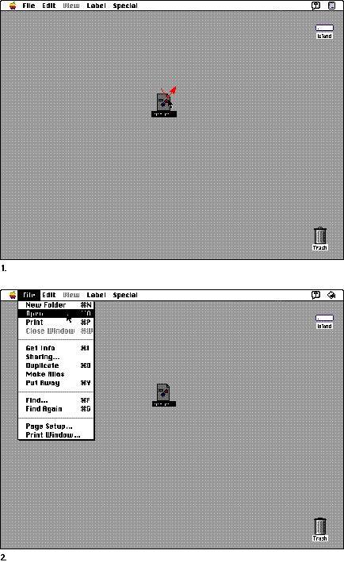

|
Chapter 4 - MenusThis chapter describes the kinds of menus you can implement in your application--pull-down menus, scrolling menus, hierarchical menus, pop-up menus, palettes, and tear-off menus. It also describes in detail the appearance and behavior of these menu types including how menu items should be worded and what symbols you can use in menus. This chapter defines the items in the standard menus most applications use and the standard keyboard equivalents for those menu items. Menus present lists of menu items--commands, attributes, or states. The user can browse through menus or choose an item. Menus appear in several forms in the interface. Pull-down menus are available in the menu bar. Hierarchical menus include submenus that descend from pull-down menu items. Some menus can be torn off from the menu bar to become palettes. Pop-up menus generally appear in dialog boxes. See Inside Macintosh: Macintosh Toolbox Essentials for information about implementing menus in your application. In the Macintosh interface, people use a specific syntax
for completing actions. First they select an object, then
they choose a command to act on Figure 4-1 The standard order of actions  |
|
|
Menus are based on the principle of see-and-point. People
don't have to remember command names because they can see all
the options at any time and choose any available option. The
menu bar also reflects the principles of perceived stability
and aesthetic integrity. The menu bar provides a stable
location for people to look for commands. It remains at the
top of the screen no matter what the user is doing. To
maintain the visual clarity of the interface, only the menu
bar is visible until the user pulls down a menu to look at its contents. This feature allows people to concentrate on the main attraction, the content of the screen, while giving them easy access to the menus. Each application, each desk accessory, and the Finder have their own menu bars, containing standard menus and their own application-specific menus. |
|
Chapter Contents
|